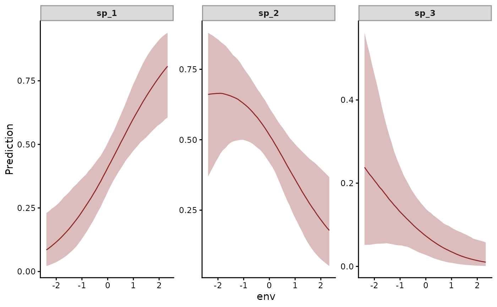

For a single category recorded on each unit, such as the dominant
species at a site. The data hold one row per category at each unit,
with response 1 on the observed category and 0 on the others. The
observed category is categorical with probabilities softmax(mu),
where mu holds the categories' linear predictors.
Details
jsdgam() fits the family, taking the unit and category columns
and the number of latent factors n_lv. The constraints that
identify the model are those of diri(). A unit holds one trial.
It informs the factor loadings less than a multi() unit of many
counts does. Recovering the residual correlations needs more
units.
Identification
The softmax is unchanged when the same constant is added to every component. The data then identify neither a shift of the linear predictors that every component shares nor a shift of the loadings that every component shares. mvgam removes both:
The first component is the reference. Its linear predictor is subtracted from every component's before the softmax, as in brms's
dirichlet()family. A term that acts on every component alike, such asInterceptorenviny ~ env * series, then cancels. Its posterior is its prior,student_t(3, 0, 2.5)by default. Theseriesterms are contrasts with the first component.jsdgam()warns when the formula has no term that varies by component.Each column of the loadings
Zsums to zero, through Stan'ssum_to_zero_vectortype.
A loadings_prior combines with that constraint.
Post-fit conventions
The density is joint over a unit's components, which makes the unit
the grain of log_lik(), loo() and waic() (Vehtari et al.
2017). log_lik() gives each unit's log density on its first row
and NA on the others. loo() then counts each unit once.
loo_compare() needs every model it compares scored at that grain.
posterior_linpred() gives mu per row before the reference
subtraction. posterior_epred() gives the expected shares, which
sum to one within each unit.
References
Warton, D. I., Blanchet, F. G., O'Hara, R. B., Ovaskainen, O., Taskinen, S., Walker, S. C. and Hui, F. K. C. (2015). So many variables: joint modeling in community ecology. Trends in Ecology and Evolution, 30(12):766-779. doi:10.1016/j.tree.2015.09.007
See also
Other observation families:
beta_nb(),
com_binomial(),
diri(),
multi(),
mvgam_families,
mvn(),
mvt(),
nmix(),
occ(),
tweedie()
Examples
# \dontrun{
# The one category observed at each of 150 sites
simdat <- sim_jsdgam(family = categ(), n_species = 3L,
n_sites = 150L, seed = 4L)
fit <- jsdgam(
formula = y ~ env * series,
factor_formula = ~ -1,
data = simdat$data_train,
unit = time, species = series,
family = categ(),
n_lv = 1L,
chains = 2L,
silent = 2
)
# The probability of each category along the gradient
conditional_effects(fit, effects = "env:series")

# Next, pp_check(fit) compares observed and replicated categories
# }